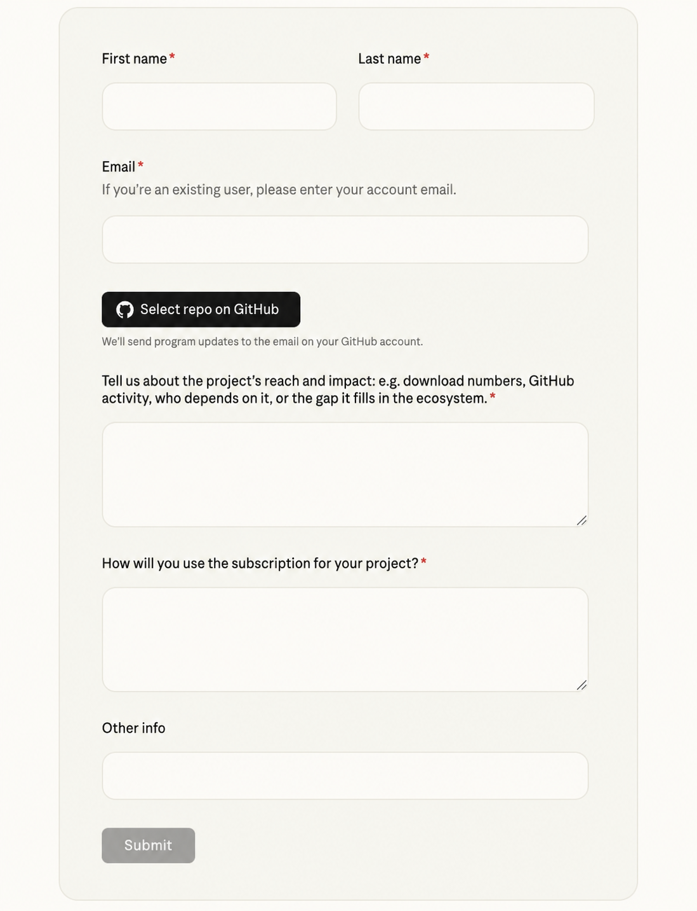

6 months free.
Here’s how to apply.
Commented CLAUDE on my reel? You’re in the right place. Claude’s Open Source Program offers six months of free Claude Ultra to eligible open source contributors.
Open the official application →Open the link & fill the form
Open Claude’s official form →. If it doesn’t load inside Instagram, open it in Chrome or Safari. Enter your first and last name. If you already use Claude, enter your Claude account email. Tap Select repo on GitHub and select your repo, then click Use this repository. The form says program updates go to the email on your GitHub account, so check that inbox too.

Use these prompts to write your answers
The form has two required written answers: your project’s reach and impact, and how you will use the subscription. Use one prompt for each field below.
Prepare your two answers
Use the examples below for structure, then generate each answer separately. The examples describe a fictional project. Replace them with your own work. Paste each finished answer into the matching field shown below.
Answer 1: Your project’s reach and impact
Form question: “Tell us about the project’s reach and impact: e.g. download numbers, GitHub activity, who depends on it, or the gap it fills in the ecosystem.”
Example answer — fictional project
I maintain OpenRead, an open source library that helps libraries turn scanned documents into searchable text. I review pull requests, fix document-parsing bugs and maintain the setup documentation. The package receives 220,000 monthly downloads. My repository, maintainer profile and download statistics are linked below so you can verify my role and the project’s usage.
Prompt for answer 1
Help me answer this Claude for Open Source application question: “Tell us about the project’s reach and impact: e.g. download numbers, GitHub activity, who depends on it, or the gap it fills in the ecosystem.” Use simple, natural English. Use only my facts and supporting links. Ask for missing information first. Do not invent usage numbers, contributions or eligibility. Answer the exact question and follow its word limit. Word limit: [paste here, if any] Project name and URL: [add here] What it does and who uses it: [add here] My role and actual contributions: [add here] Download numbers or GitHub activity, with dates and links: [add here] Who depends on it or what gap it fills: [add here]
Answer 2: How you’ll use the subscription
Form question: “How will you use the subscription for your project?”
Example answer — fictional project
I would use Claude to help write regression tests for document-parsing bugs and improve our installation instructions. For a reported bug, I would provide a small reproduction, ask for test cases and check the suggestions against our existing test suite. I would also use it to draft clearer setup examples for new contributors. I would review and test changes before merging them.
Prompt for answer 2
Help me answer this Claude for Open Source application question: “How will you use the subscription for your project?” Keep it specific and in simple English. Use only the details I provide. Ask follow-up questions if they are missing. Do not invent tasks, results or time savings. Answer the exact question and follow its word limit. Word limit: [paste here, if any] My project and role: [add here] A real maintenance problem: [add here] What I want Claude to help with: [add here] Who would benefit and how: [add here] How I would review or test the output: [add here]
Turn each prompt into your answer
Tap Copy and paste into ChatGPT or Claude. Fill in your project details. Answer any follow-up questions, check every claim, then paste the finished response into the matching field. Repeat with the second prompt.
Submit & wait for an update
Paste answer 1 into the reach-and-impact field and answer 2 into the subscription-use field. Use Other info only for relevant extra context; it is not marked required in the form. Remove all brackets, check your links, and make sure every claim is true. Follow the official form’s instructions and keep any confirmation. Submitting is an application; access is not guaranteed and no response time is promised here.
After six months: Anthropic says it will email you before the complimentary subscription ends. A previous paid plan resumes at its prior plan and rate unless you cancel; otherwise the account returns to the free plan.
Open the application →Source
Offer and eligibility checked against the official Claude page on 2 November 2026. The response templates are our writing suggestions.
Additional information
This is for open source maintainers and contributors. You need real project or contribution history. Approval is not guaranteed.
About the open source program
- Maintainers / library authors: packages with 500+ dependent repos, 100+ dependent packages, or 200,000+ combined monthly downloads across registries.
- Core contributors: listed committers or maintainers on recognized foundation or language projects, such as CPython, Rust, Node.js TSC, Apache PMC, CNCF, Kubernetes, Linux, Django or Rails.
- Active contributors: 100+ authored pull requests merged into repositories you do not own in the last 12 months.
- Community builders: a repository with 20+ unique external contributors whose pull requests were merged in the last 12 months.
- Critical infrastructure: a repository you maintain with an OpenSSF criticality score of at least 0.4.
Don’t quite fit? Anthropic also invites people maintaining projects the ecosystem quietly depends on to explain their impact.